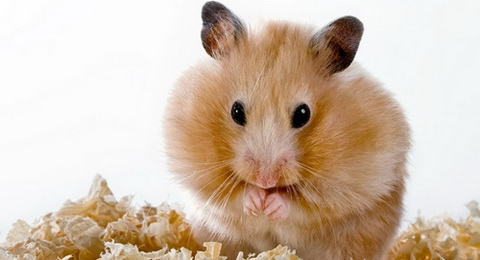
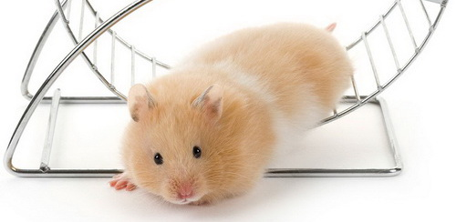
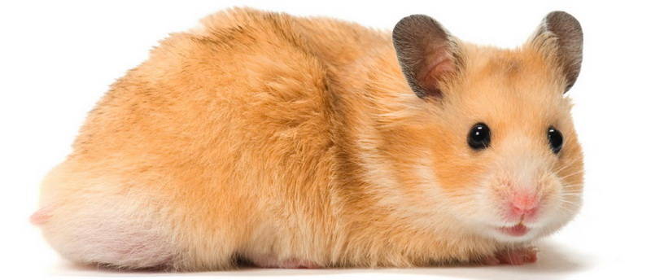

Šest zanimljivosti o hrčcima!
1. Njuškanje
Kad dovedete hrčka u njegov novi dom, očekujte mnogo istraživanja i njuškanja okolo.Hrčci nemaju dobro razvijen vid, ali zbog toga imaju istančan osećaj za mirisTu naravno do izražaja dolaze njihovi brkovi, koji im doslovno pomažu da dobiju bolji osećaj za svoju okolinu. Njuškanje je često praćeno stajanjem na zadnjim nožicama.
2. Kopanje
Na taj način vaš maleni glodar stvara natkrivena područja, u koja se može dobro sakriti,kao i sakriti ostatak hrane. To ćete posebno viđati nakon što mu promenite podlogu.Hrčci obožavaju skrovišta, a to im dolazi iz života u divljini, gde su čest plen, a ovako se spasavaju.
3. Žvakanje
Zubi hrčka stalno rastu pa ih on stalno mora negde trošiti. Upravo zato kada ga ulovite u sumanutom žvakanju, nemojte brinuti, to je sasvim uobičajeno ponašanje.Samo budite sigurni da ste mu osigurali razne prikladne stavke za žvakanje - drvo, igračke i slično.
 4. Ostavljanje traga
Možda ste već primetili kako vaš ljubimac trlja bokove uz razne predmete. To je zato što on tako ostavlja svoj trag Hrčci imaju mirisne žlezde, ali njihovo tačno mesto na telu varira u zavisnosti od vrste.
5. Cviljenje ili pištanje
Hrčak koji pravi buku generalno nije srećan i zadovoljan, već pre ljut ili uplašen, a ovim vam zvukovima to želi jasno staviti do znanja.
6. Ležanje na leđima
Neki hrčci vole da leže na leđima, kada spavaju ili kada se samo opuštaju. Pustite ga da uživa, a podignite ga tek kada se on vrati na noge.
